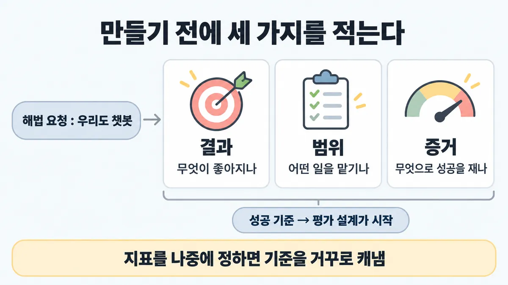
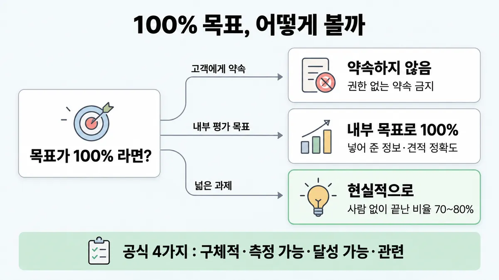
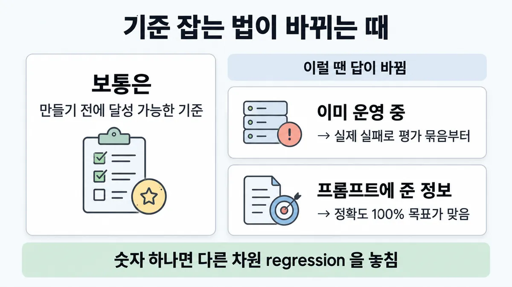

■ 문제 정의
표시가 없는 문장은 공식 문서에서 확인한 내용이에요. 다른 표시는 읽는 법
왜 배우나 — 시험이 요구하는 것
시험 목표 1.1 업무 문제를 Claude 해법으로 · D1 설계 17%Translate business problems into Claude-based AI solutions
이 개념으로 푸는 판단 (할 수 있어야 하는 것)
- 1.1② "챗봇 넣자" 는 요청, 무엇부터 적나? — 해법보다 결과·범위·성공 기준을 먼저 정하기
- 6.1① "완벽한 계약 검토기를 만들어 달라" — 아키텍트의 첫 행동은? — 해법(모델·프롬프트·에이전트)보다 디스커버리 먼저
- 6.1② 성공 기준을 어떻게 적나 — SMART 로? 숫자 하나로? — 성공 기준의 요건 (Anthropic 4가지 + 여러 차원)
한눈에
(problem framing) "우리도 챗봇" 같은 해법 요청을 받으면 만들기 전에 결과(무엇이 좋아지나) · 범위(어떤 일을 맡기나) · 증거(무엇으로 성공을 재나)부터 적음. 공식 순서 = 성공 기준(success criteria)을 먼저 정하고, 그 기준을 재는 평가를 설계하는 것이 시작
비유 SLO 없이 서비스를 띄우면 지금이 장애인지 판정을 못 함. "일단 띄우고 모니터링은 나중에"가 속이는 습관


ELI5
집을 짓기 전에 "몇 명이 살고, 방이 몇 개 필요하고, 다 지으면 뭘로 잘 지었는지 확인할지" 먼저 적는 거예요.
- "멋진 집 지어 줘" 만으로는 벽돌을 못 쌓아요.
- 누가 살지(결과), 어느 방부터(범위), 뭘로 확인할지(증거)를 먼저 정해요.
- 다 지은 뒤에 기준을 정하면, 이미 지은 집에 맞춰 기준을 고치게 돼요.
- "절대 안 무너짐" 은 약속할 수 없어요. 대신 "지진 몇 도까지" 로 적어요.
개념 설명
원리
왜 해법보다 먼저인가
- 공식 문장 : 성공하는 LLM 앱은 성공 기준(success criteria)을 먼저 정하고, 그 기준을 재는 평가를 설계하는 데서 시작함. 이 사이클이 프롬프트 엔지니어링의 중심.
- 기준이 없으면 "지금 잘 되나"를 판정 못 함 → 개선도 regression(회귀)도 안 보임.
- 늦게 정하면 운영(production) 중인 시스템에서 기준을 거꾸로 캐내야 함(evals 글). 초기엔 제품 요구가 그대로 테스트 케이스가 됨.
결과 · 범위 · 증거 (세 이름은 학습 목록·업계 표현, 내용은 공식 순서와 같음)
- 결과 : 무엇이 좋아지나 — 업무 효과 기준(사람 없이 끝난 비율 · CSAT · 처리 시간).
- 범위 : 무엇을 맡기나 — 이상적인 대화를 적고 과제로 쪼갬(인사 · 상품 정보 · 주제 유지 · 견적). 과제마다 프롬프트·평가를 만들 수 있고 테스트 범위가 보임.
- 증거 : 무엇으로 재나 — 과제 품질 기준(이해 정확도 · 관련성 · 주제 유지 · 상담원 연결 정확도).
좋은 기준의 모양
- 공식 4가지 = 구체적 · 측정 가능 · 달성 가능 · 관련. SMART 의 기한(T)은 없음.
- 달성 가능 = 업계 벤치마크 · 이전 실험 · 전문가 지식에 기대고, 현재 최신 모델 능력에 비춰 비현실적이면 안 됨.
- 대부분 여러 차원(예 : F1 · 독성 비율 · 오류의 심각도 · 응답 시간)으로 측정.
- 세부 쓰는 법은 ■ 성공 기준(D4) 몫.
약속과 목표는 다름
- 고객·계약에 "100% 정확"을 약속하지 않음. 에이전트도 권한 없는 약속을 못 하게 가드레일.
- 그러나 내부 평가 목표로 100% 를 두는 칸은 있음 — 프롬프트에 넣어 준 회사·상품 정보 정확도, 견적 정확도.
규칙과 판단


갈림길
①②④ 요청을 받으면 [1.1②] [6.1①]
결과·범위·증거로 바꿈
해법 요청을 결과 · 범위 · 증거로 바꿈 (세 이름은 업계 일반) · 만들기 전에 성공 기준과 평가부터
과제로 쪼갬
이상적인 대화를 적고 → 맡길 과제로 쪼갬 → 과제마다 프롬프트·평가
다음 물음 — 목표가 "완벽·100%"?
실제 실패부터 과제로
이미 운영 중이면 버그 트래커·지원 큐의 실제 실패부터 과제로 · 늦을수록 운영 중인 시스템에서 성공 기준을 거꾸로 캐내야 함
③⑤ 기준 점검 [1.1②] [6.1②]
약속하지 않음
목표는 현재 최신 모델 능력에 비춰 현실적으로 · 에이전트가 권한 없는 약속을 하지 않게
내부 목표로 100%
내부 목표로 100% 를 두는 칸은 있음(프롬프트에 넣어 준 회사·상품 정보 정확도 · 견적 정확도) — 약속이 아니라 평가 목표
현실적으로
목표는 현재 최신 모델 능력에 비춰 현실적으로 · 사람 없이 끝난 비율 70~80% → ■ impact metrics
구체적으로
"좋은 성능" 대신 "정확한 감정 분류"처럼
여러 차원
공식 4가지(구체적·측정 가능·달성 가능·관련)에 기한 없음 · 대부분 여러 차원
만들기 시작
이 기준으로 평가를 설계 → ■ 성공 기준
규칙 원문 ①②③④⑤ (갈림길로 그린 규칙)
-
해법 요청 → 결과 · 범위 · 증거로 바꿈. 결과 = 지원 비용 절감 같은 업무 결과 · 범위 = 반복되는 1단계 문의처럼 맡길 일 · 증거 = 잴 기준 (세 이름은 업계 일반)
공식 순서(고객지원 가이드 "만들기 전에") = Claude 가 맞는 일인지 판단 → 이상적인 대화 적기 → 과제로 쪼개기 → 성공 기준 정하기 [1.1②]
-
범위 : 이상적인 대화를 적고 → 맡길 과제로 쪼갬(인사·상품 정보·주제 유지·견적). 과제마다 프롬프트와 평가를 만들 수 있고, 테스트 케이스 범위가 보임 [1.1②]
-
증거 : 좋은 성공 기준 = 구체적(Specific) · 측정 가능(Measurable) · 달성 가능(Achievable) · 관련(Relevant) 4가지. 대부분 여러 차원(정확도·안전·지연(latency)·비용)으로 측정 [1.1②] [6.1②]
구체적 = "좋은 성능" 대신 "정확한 감정 분류"처럼
SMART 의 기한(Time-bound)은 공식 4가지에 없음 · 세부 쓰는 법 → ■ 성공 기준
과제 품질 기준(이해 정확도·관련성·주제 유지·상담원 연결 정확도)과 업무 효과 기준(사람 없이 끝난 비율 70~80% · CSAT 4/5 · 처리 시간)을 따로 둠
-
언제 : 만들기 전에. 늦을수록 운영(production) 중인 시스템에서 성공 기준을 거꾸로 캐내야 함 · 이미 운영 중이면 버그 트래커·지원 큐의 실제 실패부터 과제로
-
약속 : "정확도 100%" 를 약속하지 않음 — 목표는 현재 최신 모델 능력에 비춰 현실적으로 · 에이전트가 권한 없는 약속을 하지 않게(가드레일)
단 내부 목표로 100% 를 두는 칸은 있음(프롬프트에 넣어 준 회사·상품 정보 정확도 · 견적 정확도) — 약속이 아니라 평가 목표
더 깊이 : 판단 규칙 · 상황 변수 (설명)
판단 규칙
| 조건 | 답 | 등급 | 근거 |
|---|---|---|---|
| 해법("챗봇", "제일 좋은 모델")부터 요청받음 | 결과·범위·증거(성공 기준)부터 적고 만듦 | (세 이름은 업계 일반) | define-success "starts with clearly defining your success criteria and then designing evaluations" |
| 범위가 막연함 | 이상적인 대화를 적고 → 과제로 쪼갬 | customer-support-chat "Before you start building, break down your ideal customer interaction into every task" | |
| 기준이 "좋은 성능" 같은 말 | 구체적으로("정확한 감정 분류") | define-success | |
| 기준이 숫자 하나 · 기한 포함 SMART | 공식 4가지 + 여러 차원 | define-success | |
| "100% 정확"을 약속하라는 요구 | 달성 가능한 목표 + 권한 없는 약속 금지 | define-success · customer-support-chat | |
| 이미 운영 중인데 기준이 없음 | 버그 트래커·지원 큐의 실제 실패부터 과제로 | demystifying-evals | |
| "지표는 운영하며 정하자" | 만들기 전에 | demystifying-evals "Wait too long and you're reverse-engineering success criteria from a live system." |
상황 변수
| 변수 | 값 | 답 쪽 | 등급 | 근거 |
|---|---|---|---|---|
| 요청의 모양 | 해법(챗봇·모델명) | 무엇이 좋아져야 하는지(결과)를 되물음 | 판단 규칙 1 | |
| 요청의 모양 | 결과(비용 절감)는 있음, 범위 없음 | 과제로 쪼개기 | 판단 규칙 2 | |
| 시점 | 착수 전 | 기준·평가부터 | 판단 규칙 1 | |
| 시점 | 이미 운영 중 | 실제 실패로 과제 모으기 | 판단 규칙 6 | |
| 기준의 대상 | 고객·계약서 | 달성 가능한 수치 + 사람 검토 경로 | (달성 가능) · 업계 일반(사람 검토 경로) | define-success |
| 기준의 대상 | 내부 평가 목표, 프롬프트에 넣어 준 정보 | 100% 목표도 공식 예 | customer-support-chat | |
| 기준의 종류 | 과제 품질 | 이해 95%+ · 관련성 90%+ · 상담원 연결 95%+ (공식 예시값) | customer-support-chat | |
| 기준의 종류 | 업무 효과 | 사람 없이 끝남 70~80% · CSAT 4/5+ · 처리 시간 사람보다 짧게 | customer-support-chat | |
| 도메인 | 의료 vs 일상 챗봇 | 인용 정확도의 무게가 다름(관련성) | define-success |
연습 문제
보험사 임원이 "우리도 챗봇 하나 만들자, 제일 좋은 모델로"해법부터라고 요청한다. 무엇이 좋아져야 하는지, 어떤 문의를 맡길지, 성공을 무엇으로 잴지는 아직 아무도 적지 않았다. 팀장은 "일단 띄우고 지표는 운영하며 정하자"고 한다. 가장 먼저 할 일은?
시험 대비
함정
- "요청받은 챗봇부터 만들고 지표는 운영하며 정한다" → 만들기 전에 성공 기준·평가. 늦으면 운영 중인 시스템에서 기준을 거꾸로 캐냄
- "정확도 100% 를 약속하고 착수" → 달성 가능해야 함 · 권한 없는 약속 금지
- "SMART 5요소(기한 포함)로 핵심 지표 하나" → 공식은 4가지 + 여러 차원
- "요청대로 가장 좋은 모델부터 고른다" → 모델·도구는 범위·위험·성공 기준이 보인 뒤 업계 일반 학습 목록 6.1① 규칙 → ◆ 코드 vs LLM vs hybrid
- 반대 함정 : "100% 목표는 항상 오답" → 프롬프트에 넣어 준 정보의 정확도처럼 100% 가 공식 목표인 칸도 있음
신호
"Building a successful LLM-based application starts with clearly defining your success criteria and then designing evaluations to measure performance against them."
"Your success metrics should not be unrealistic to current frontier model capabilities."
"Most use cases need multidimensional evaluation along several success criteria."
"Before you start building, break down your ideal customer interaction into every task you want Claude to be able to perform."
"Wait too long and you're reverse-engineering success criteria from a live system."
"Ensure the agent doesn't make promises or enter into agreements it's not authorized to make."


더 깊이 : 뒤집히는 때 · 오답 재료 (설명)
뒤집히는 때
1. 100% 가 오답이 아닌 때
- 조건 : 보기에 "프롬프트에 넣어 준 상품 정보의 정확도 100% 를 평가 목표로" 가 있음.
- 판단 : 약속(계약·고객)이 아니라 내부 평가 목표이고, 대상이 "프롬프트에 넣어 준 정보"임 → 공식 예시가 바로 100% 목표. "100% = 무조건 오답"으로 외우면 틀림.
- 근거 : customer-support-chat "Target 100% accuracy in this introductory information."
2. 업무 효과 숫자로 범위를 잴 때
- 조건 : 반복되는 1단계 문의가 월 1만 2천 건. 목표 = 사람 없이 끝나는 비율 70~80%.
- 계산 : 1만 2천 × 0.7~0.8 = 8,400~9,600건이 사람 없이 끝나고, 2,400~3,600건이 사람에게 감.
- 판단 : 사람 쪽으로 넘어가는 건수가 곧 상담원 인력 계획의 입력 → "결과(비용 절감)"를 숫자로 적는 법. 넘길 때 맞게 넘겼는지(상담원 연결 정확도)도 따로 측정.
- 등급 : 계산 (70~80% · 연결 정확도는 확인)
- 근거 : customer-support-chat
3. 이미 운영 중이라 "처음부터 기준"이 안 되는 때
- 조건 : 챗봇이 석 달째 운영 중, 성공 기준이 없음.
- 판단 : 처음으로 돌아가지 않음. 버그 트래커·지원 큐의 실제 실패를 과제로 바꿔 평가 묶음을 만들고, 사용자 영향 순으로 우선. 20~50개로 시작해도 됨(4.2).
- 근거 : demystifying-evals
4. 숫자 하나로 충분해 보일 때
- 조건 : "요약 정확도 90%" 하나로 기준을 끝냄.
- 판단 : 공식 예시는 한 기준 안에 정확도(F1) · 무독성 비율 · 오류의 심각도 · 응답 시간을 같이 둠. 숫자 하나면 나머지 차원의 regression 을 못 봄.
- 근거 : define-success
오답 재료
| 오답 | 왜 끌리나 | 왜 틀리나 | 등급 | 근거 |
|---|---|---|---|---|
| "요청받은 챗봇부터 만들고 지표는 운영하며 정한다" | 빨리 보여 줄 수 있음 | 늦으면 운영 중 시스템에서 기준을 거꾸로 캐냄 | demystifying-evals | |
| "정확도 100% 를 약속하고 착수" | 이해관계자(stakeholder)가 원함 | 달성 가능해야 함 · 권한 없는 약속 금지 | define-success · customer-support-chat | |
| "SMART 5요소(기한 포함)로 핵심 지표 하나" | 익숙한 틀 | 공식은 4가지, 대부분 여러 차원 | define-success | |
| "요청대로 가장 좋은 모델부터" | 품질 걱정을 한 번에 없앰 | 범위·기준이 없으면 모델이 맞는지도 측정 못 함 | 업계 일반 | 목록 6.1① 규칙 |
| "안전한 출력" 같은 기준 | 뜻은 맞음 | 재지 못함. 공식 좋은 예 = "1만 번 중 0.1% 미만이 독성 판정" | define-success | |
| "100% 목표 보기는 항상 오답" (반대 함정) | 1번 함정을 외움 | 프롬프트에 넣어 준 정보 정확도는 100% 가 공식 목표 | 뒤집히는 때 1 |
참고
개념
출처
- 가이드 목표 1.1 공식 시험 가이드 v1.0
- define-success
- customer-support-chat
- demystifying-evals
상태
- 업계 일반 2줄(결과·범위·증거 이름 · 모델은 뒤에)
미해결
- "결과·범위·증거" 세 이름 자체는 공식 문장에서 못 찾음(목록·영상 표현). 공식 대응은 고객지원 가이드의 "만들기 전에" 네 단계(판단 → 이상적 대화 → 과제 → 성공 기준)와 define-success 사이클.
- 목록 6.1① 이 든 공식 근거(code.claude.com best-practices "solves the wrong problem")는 원문을 받지 않아 여기선 인용 안 함 — 6.1 카드 때 확인.
- "불확실한 경우의 사람 검토 경로"(목록 6.1②)는 이 카드 원문들에서 문장을 못 찾음 — 5.3 쪽 카드에서 확인.